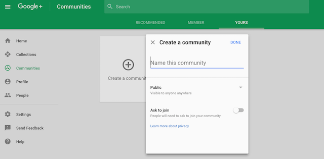
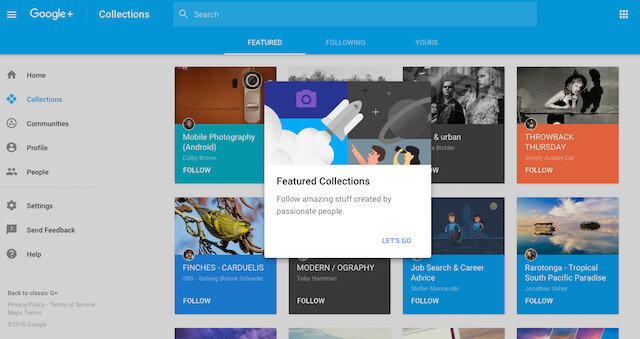

You could achieve most of that pretty quickly with the Layouts Plugin + a sidebar of choice + TLP (TC) or TLThumb
Fakebook Theme
Yes, that’s true. I guess I would just like to see it have its own theme. I will do what you said though, thank you.
I think that’s not possible because that is the generated thumbnail or the first image of the topics.
would be better if thumbnails weren’t created for videos then - instead, embed from YouTube/Vimeo.
would this option include User Wall, or is the TLP plugin required for that? and correct me if i’m wrong, but TLP plugin means the sidebars would goof up displaying of topics, right?
seems like TLP (TC) would be the best option for a new growing site with not much content, yes?
The TC flavour is responsive to sidebars and has the portfolio/user wall. Best to discuss that in the ‘plugins’ topic.
It is a tough choice. 
Fakebook Theme can only work with TLP (TC) but not TLP (Plugin).
However, in Fakebook Theme, Topic list is arrange in single column.
Since, Chrome (Desktop) have limitation of 1000 row, in my case, post will overlapping each other after showing 30 posts.
(2 column → around 60 posts, 3 column → around 90 posts)
That is why I prefer using Layout Plugin for sidebar + TLP (Plugin).
TLP plugin because of that Chrome bug and no other reason, right? otherwise you’d use TLP TC?
That is the major reason.
The design of Fakebook Theme is unique, fun and interesting.
But if you want a much feature rich sidebar, you may prefer the Layout Plugin.
On iPhone Safari, the homepage doesn’t maintain its position when the user navigates back using the back button when using Fakebook theme. On pressing back, the page scrolls to a random position in the timeline making it unusable. I understand Safari is not meant to be used in the first place but unfortunately Home Screen websites are opened using Safari’s rendering engine. I wasn’t able to reproduce this issue for the standard theme used here on meta. And this only happens on Safari not chrome.
It is important because it impacts users using the Home Screen button to access the website.
hi @Don, I really like your site. how did you add those link buttons (i guess banner) to the top of the page?
I’m running fakebook modern and I have deleted all plugins on my site, and this is happening in the left sidebar:
{kind=link}
Also, this is happening at the bottom of my topics – buttons and controls forced left:
{kind=link}
How to fix these issues?
@awesomerobot once again thanks so much for this great theme.
One bug that I have - if I want display sub categories at the top of a category page, then the list below of the topics becomes extremely narrow. Not sure why.
Is there a workaround?
@awesomerobot I am having a slight issue with the theme. Selected tab’s text is unreadable in the invitation panel when using Fakebook
{kind=link}
I have also made a pull request for this
Can you please check? thanks
Google be wanting to make the users love Google+, and then later throw it off a cliff.
But on-topic, this is an amazing idea, the UI of Google+ is pretty good.
These issues should now be fixed with my latest update to the theme (Fakebook Modern)
These issues are still standing. Can someone please fix these so that this theme becomes way more usable?
I want to use Discourse Reactions for this theme.
Can someone please update the list page to show Discourse Reactions?
I noticed this issue too. The formatting breaks when the category subcategories are turned on. I’ve been able to correct some of the formatting issue so it displays sensibly by using the following SCSS in a custom theme component:
body.categories-list.category {
.category-heading {
p {
font-size: var(--font-up-1);
}
}
table.topic-list tr.topic-list-item > div.main-link {
display: table-cell;
width: 100%;
.link-middle-line > .topic-image {
margin: 10px 0;
> img {
width: 100%;
}
}
}
}
Still a bit of work to go to make it behave as normal, though. I think it is a bug in the theme. I will take a look when I get a chance and see if I can identify the issue and fix it. I’d like to display subcategories, and it’s not possible in the current code version.
@awesomerobot let me know how I can help =) If you have any pointers or ideas, I’m all ears.
The space layout is unreasonable, and the classification selection actually accounts for one-third of the width! Perhaps it would be better to re-adjust the proportions of the various components in the interface.
In addition, can the topic style be made into a component separately? I like this way of displaying part of the content and pictures directly.
Hello,
It’s really a very nice customization 

 . Is it possiable to have your “Fakebook Modern Plus” theme?
. Is it possiable to have your “Fakebook Modern Plus” theme?
I am actually interested in knowing the same thing. I’ve been thinking about it for a while. I’m glad I came across your post.
If there is a way to replicate (at least) most of the looks and functionality of Google+ VIA themes and plugins, I would be all for it!
Here are some images I could find online. The entirety of Google+ was not archived well in its final days.

{kind=link}

Could you have more option to be the same as facebook?
- Hide title
- Image first
- Multi image layout
- Icon font
Hey guys, would it be possible to tell the theme to only customize the feed section and leave the inbox alone? It’s not a very clean UI for messaging lol.
Hi @awesomerobot and Team,
I would like to know how to customize this Fakebook theme, because I have implemented this theme in my application, I need to changes some css styles but I couldn’t find any editor to override the existing css. Please let me know how to achieve that.
Can someone please tell whether it is possible or not. Thank You !
There are a couple different ways you can go to customize an existing theme:
-
You can add a new theme component, and override the Fakebook theme’s CSS in that theme component. This is the recommended way for minor edits, as you’d still be able to get updates to the underlying theme. There are some guides here on Meta that should help:
-
Alternatively, you can fork the Fakebook theme on Github and make edits to your own copy, and then install that.
- Github has some onboarding if you haven’t used it before: Getting started with your GitHub account - GitHub Docs
- Github’s fork documentation: Fork a repo - GitHub Docs
{kind=link}
{kind=link}
{kind=link}
Just use Topic List Previews (tiles) or Topic List Thumbnails with Layouts Plugin and a right and left sidebar.
Thanks. I am currently use Topic List Preview. Working perfectly!
I just tested Layout Plugin, a little more complicated.
I hope sidebar will be officially in Discourse. 
Feel free to ask for support on the Layouts Topic. It’s pretty straightforward. Just add widgets by installing them as theme components and then select them in the plugin settings.
This has now been resolved with the following PR:
How can I add image preview on the suggested topics?
Hello,
Create a new theme component or add this to an existing one.
Add to Common / CSS
This will display the topic image on suggested topics.
#suggested-topics {
.topic-list .main-link {
.link-middle-line {
.topic-image,
img {
display: block;
}
}
}
}
If you want to add the topic excerpt too then use this code snippet instead of the previous.
This will display the topic image and topic excerpt on suggested topics.
#suggested-topics {
.topic-list .main-link {
.link-middle-line {
.topic-image,
img {
display: block;
}
}
.topic-excerpt {
display: block;
}
}
}
I have just created a theme component (fakebook-preview-suggested-topics).
I am happy to share if anyone is interested (Just click Like).
But this is the old Facebook theme.
If you’re looking for a newer one, the FKB Pro theme is a good pick.
I have the impression the theme needs an update.
{kind=link}
Similar result in Chrome
{kind=link}
But it looks better when you are logged out
{kind=link}
Thanks for mentioning it, I’ve done some maintenance here
Since this theme predates the Discourse sidebar, it also seems worth mentioning that this is best used with the site setting Navigation menu set to dropdown